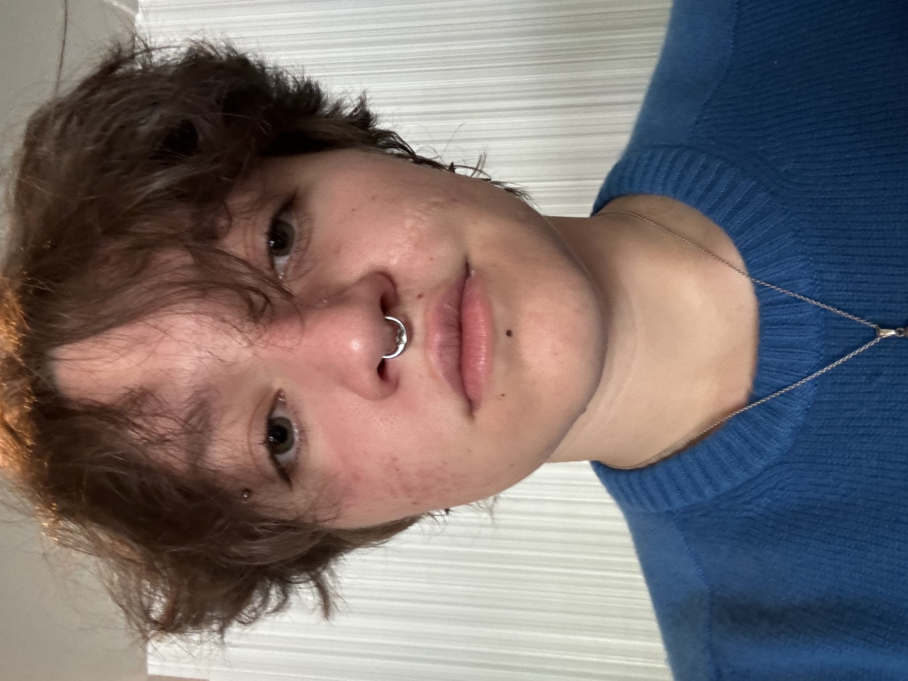

A LITTLE MORE PERSONAL
Interested in my art or tattoos?
I also make art and design tattoos. You can see more of my creative work over here.
Visit my art →
HI !! مرحبا !! I AM ...
I am from Los Angeles but am currently attending Tufts University in Medford MA, where I am studying International Relations, Computer Science, and Arabic. I hope to combine my skillset with my passion for community building to support humanitarian and developmental projects around the world. In my free time, I like to draw, dance, and tattoo.
MEOW MEO MOWM MEWO MEOWMEWOME WMOEWEMWOOMEWOMEWOMEWOMEWOMEWOMEOWMEOW MEWOM mewo MEOW mEOW mEOW mOEW MEOW
Managed up to five campus center events per day and coordinated 15+ room bookings daily, supporting a campus of 6000+ students, staff, and visitors.
MEOW MEO MOWM MEWO MEOWMEWOME WMOEWEMWOOMEWOMEWOMEWOMEWOMEWOMEOWMEOW MEWOM mewo MEOW mEOW mEOW mOEW MEOW
Conducted comprehensive research across multiple topics including urban development, sociology, city living, LGBT rights, minority rights, and representation in cities, to inform future consulting projects.
Collected, categorized, and analyzed annotations and notes from 150+ sources including books, magazines, newspapers, online articles, and reports.
Built and customized an accessible WordPress LMS serving 200+ students across rural Tanzania and Vietnam, improving course accessibility and engagement.
Coordinated with a 4-person international team to troubleshoot IT issues and implement user-friendly solutions for educators and students.
Technology & Social Impact
Support student-led software projects for nonprofit organizations, helping teams maintain and improve applications after their initial development period.
Student Organization
Help lead a student organization centered around pole dance, community, and creating an inclusive environment for students of all experience levels.
Engineering & Community Development
Lead technical development for an international community-focused project while contributing to organizational culture, inclusion, and team development.
SELECTED WORK
Websites, applications, and technical projects.
A short description of the project, what problem it addresses, and what you contributed.
View project →A short description of another application, website, or technical project.
View project →A short description of another technical project you'd like to highlight.
View project →Research, academic writing, presentations, and interdisciplinary work.
A short description of the research question, argument, or topic explored in the paper.
Read paper →A presentation exploring a topic, research project, or area of academic interest.
View presentation →A place to highlight a thesis, independent research, or other substantial academic work.
Read more →A LITTLE MORE PERSONAL
I also make art and design tattoos. You can see more of my creative work over here.
Visit my art →